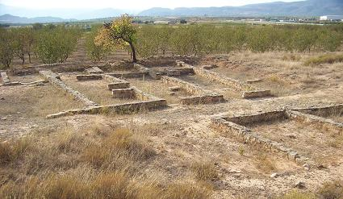

|
VILLAR
DEL ARZOBISPO
Estas tierras estuvieron pobladas
durante la Edad de Bronce, también por los íberos y por los romanos a
quienes debe su nombre actual, El Villar (conjunto de Villas).
El yacimiento íberorromano de La Aceña o La Seña estuvo habitado del siglo
VI al II a.e.c. La comunidad campesina que lo habitó se encargaba de la
explotación agrícola y ganadera de las tierras de su entorno. Tiene una
superficie de 8.000 metros cuadrados. En su recinto amurallado no hay
torres defensivas. Se accede a través de una calle central. En las casas
excavadas se hallaron estructuras destinadas a la fabricación de aceite y
transformación de metal.

Ver
íberos en C. Valenciana
|